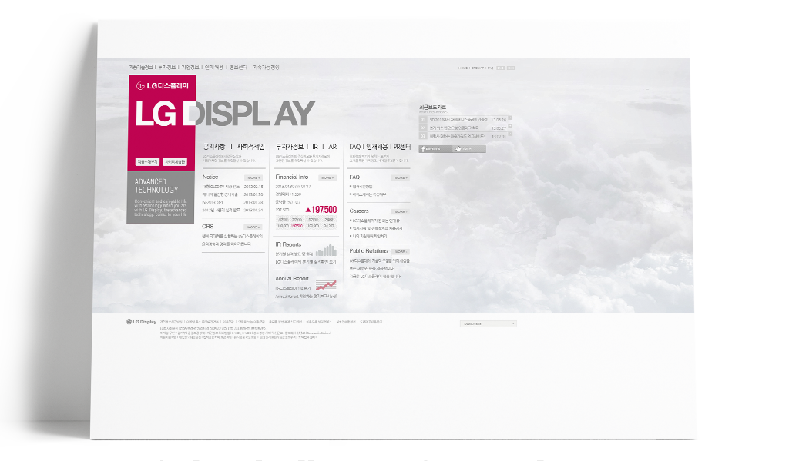

01 LG DISPLAY

2013년 취업을 위해 준비했던 포트폴리오 작품중 첫번째로 LG DISPLAY 홈페이지의 가상리뉴얼 작품. 배경으로 구름을 합성하여 동일감을 주었고, 타이포 디자인이 시작되던 시점으로 메인타이틀을 타이포디자인으로 구성. 그리드를 사용한 가독성과 컨텐츠정리를 익힐 수 있었다.
desktop only | LG DISPLAY Web >